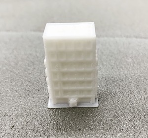
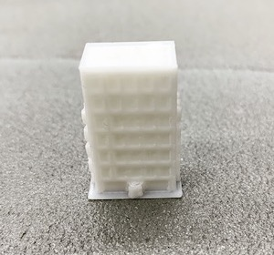

Session1（ベンチマークテスト結果）
5/9.10.15 出力結果の報告
Thingiverse.com
Thingiverseを使って3Dプリンタから出力した。まずは『BenchmarkTest』と呼ばれるものを選び、3Dプリンターの性能を測った。
Thingiverseからファイルをダウンロードして、スライサーソフト『Cura』で開くと、印刷時間が１時間２６分と表示されたが
授業時間が限られていることもあり、通常サイズの50%の大きさに設定し直すと19分になった。ちょうど半分のサイズにするので
45分ぐらいかかるかと予想していたが、思っていたよりも早かった。
micro-SDカードに移してHictop3dp-20で出力を開始した。組み立て直後1回目の出力だった為か、白いフィラメントを入れている
はずが黒い色が出てきた。徐々にグレー⇨白に色が変わっていき、ちょうど終わった頃に白いフィラメントが出てきた。
Cura上には19minとの表示があったが、実際には30分ほどかかっていた。
完成したものを取り外そうとしたが、プレートに強くくっついていて簡単には取れなかったのでヘラを使ってゆっくりと剥がした。
今回は基本的には綺麗に出力できていたが、通常の半分のサイズにしたせいで細かなところまでは再現されていなかった。
特に、しっかりと地面に接しているところはうまくできていたが、小さな文字や細い柱の上に平らな面があるものなどは
フィラメント同士がくっつかずに細い線のようになっていた。ベンチマークテストを使って3Dプリンターの性能を調べたい場合は
通常のサイズか、それ以上の大きさにするべきだとわかった。また、地面に対して平行か垂直に伸びるような形の方が斜めのものよりも
綺麗に出力されることもわかった。
続いて2回目の出力を行なった。今回も前回と同様にThingiverseからデータを頂戴した。1回目の結果を踏まえて出来るだけ四角形に
近いもの選びたかったので、「Building」と検索して小さなマンションを出力することにした。 Building
他の人が出力しているのを見るとフィラメントがうまくテーブルに接着していない事があったため、ノリを少しだけテーブルに塗ってから
開始した。すると、テーブルに綺麗に接着してフィラメントも初めから綺麗な白い色で出てきた。
今回も元のサイズ（50.9×35.1×99.7mm）から35%（17.8×12.3×34.9mm）に変更したため時間が4h46minから21minになった。
しかし実際には35分ほどかかったので、前回も含め時間はおおよそであり、曖昧なのだと感じた。

 

実際に出力してみると想像していたよりも綺麗にできていて驚いた。フィラメントはマットホワイトのようなイメージだったが、
ツルツルとしたホワイトだったと気がついた。サポート材はかなり小さく付いていて、初めどれがサポート材なのか分からなかった。
今回は全体的に小さく作ったので、次回はもう少し大きく作って違いを確かめてみようと思う。
Session2（サンプリングプロダクト）
キーウォッチ
まず僕は、その商品の使い方が限定されているもの（用途が固定されているもの）を探しに行きました。そのほうがより広がりがあると感じたからです。
すると100円ショップで様々な量を測ることができる計量スプーンを見つけました。これは用途が量を測ることに限定されているのではないかと思い
その特徴を観察しました。持ち手の部分にはフックを引っ掛けることができるような穴が空いており、すくう部分は大きく凹んでいます。
この大きく凹んでいる部分に何か別のものを取り付けられないかと考えた結果、腕時計を解体して取り付けて見ようと思いつきました。
そして腕時計を解体し（上の写真中央）、反対側に何段がさねにもした両面テープを貼り付けました。何段も重ねたのは淵だけにつけたり、
丸めてみた中で一番、時計がスプーンの表面にフィットしたからです。（下の写真中央）
完成してみると、色合いが綺麗で赤ちゃんのおもちゃのような感じにも見えました。
使い方としては、単純に小さな時計として使うこともできますが、持ち手部分の穴にひもを取り付けてキーホルダーにして持ち運ぶこともできます。
また、元々の使用場所がキッチンということでキッチンにあるフックなどに引っ掛けてちょっと時間を計りたい時などに使用することができます。
＜感想＞
すでに販売している既製品を素材として見ることで通常の使い方以外のを発見したり、新しい価値を生み出すサンプリングプロダクトという課題でしたが
今までにそのような考え方をあまりしてこなかったので「既製品を素材としてみる」というところが難しく感じました。しかし、素材集めやアイデアを出すために
色々な店を回るうちにこの考え方が楽しくなってきました。個人的にはこの「サンプリングプロダクト」はこれからの制作にもかなり重要なことだと感じたので
日常生活の中でもそのような考え方を持っておきたいなと思いました。
return